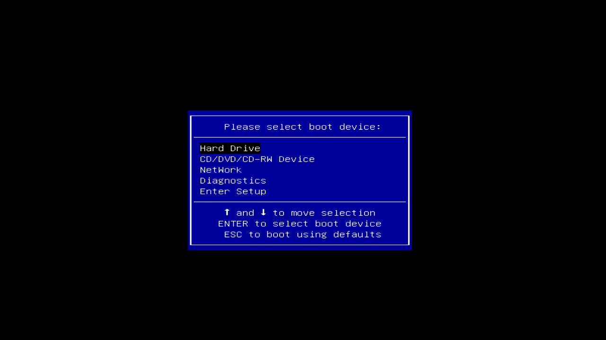

Linuxのダウンロード
Ubuntu Desktop 20.04 LTSのディスクイメージを 公式HP からダウンロードします。
Live DVDの作成
エクスプローラーで「ダウンロード」フォルダを開きます。
ダウンロードしたディスクイメージを右クリックし、 ［ディスクイメージの書き込み］をクリックする。

書き込み用ドライブがDVDドライブになっていることを確認し、 ［書き込み］ボタンをクリックする。

ディスクイメージの書き込みが始まる。

書き込みが終了したら、［閉じる］ボタンをクリックする。

Linuxのインストール
PCの電源ボタンを押したら、［F12］キーを連打する。
Boot Optionの画面が表示されるのを確認する。

Live DVDをDVDドライブに入れる。
［↑］と［↓］を使って＊＊＊＊＊を選び、［Enter］を押す。

＊＊＊＊＊

＊＊＊＊＊

＊＊＊＊＊

＊＊＊＊＊

＊＊＊＊＊

＊＊＊＊＊

＊＊＊＊＊
＊＊＊＊＊